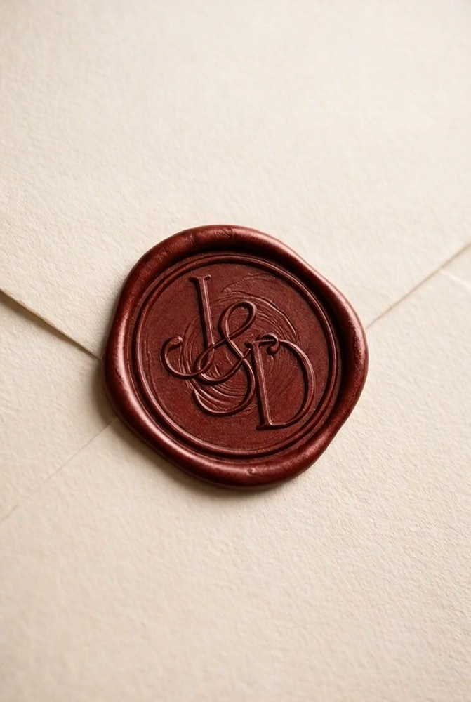
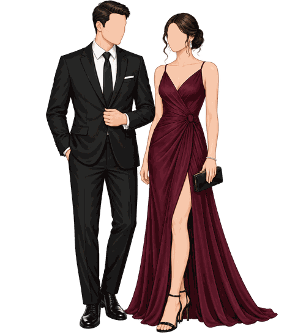

{{ invitadoNombre }}
{{ pasesLabel }}
Toca el sello


Elegirnos cada día se volvió la forma más simple de decir para siempre.
Junior & Diana

Faltan
Sábado 07 de
noviembre, 2026
Ceremonia
6:30 p.m.
Iglesia Nuestra Señora de Guadalupe
Plaza de Armas de Sunampe S/N
Chincha, Ica
Cómo será
la celebración
6:30 p.m.
Ceremonia
8:00 p.m.
Recepción
8:45 p.m.
Brindis
9:15 p.m.
Cena
10:30 p.m.
Primer baile
11:00 p.m.
Fiesta
3:00 a.m.
Fin de la celebración

Chincha · 2026
Código de vestimenta
Formal

Paleta sugerida para vestidos
Colores a evitar
Te pedimos amablemente que no utilices estos colores en tu vestimenta.
Mujeres
Blanco · Champagne · Biscotti · Beige
Hombres
Borgoña
Mesa de regalos
El mejor regalo
es su presencia
Pero si además deseas aportar un poquito de oro para nuestros sueños, aquí te dejamos nuestros datos:
Banco de Crédito del Perú
Diana Carolina Santibáñez Sanchez
Cuenta: 19395483078051
CCI: 00219319548307805113
Yape/Plin: 948126706

Los cuatro los esperamos